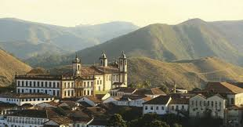
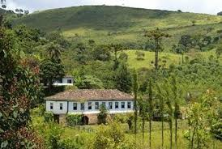
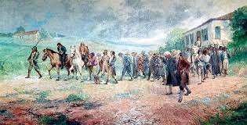
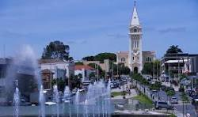
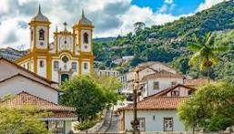
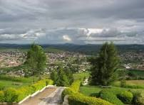
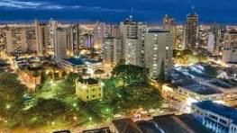

Minas Bão pra Visitar: Onde a Alma Mineira se Revela.
Minas Gerais é muito mais do que se vê nos cartões postais! Para além das montanhas famosas e cidades históricas, pulsa uma Minas Gerais profunda, autêntica e surpreendente, escondida em seu vasto interior, esperando para ser descoberta.
"Minas Bão pra Visitar", celebramos e resgatamos com paixão a beleza singular desses tesouros pouco conhecidos: seus recantos tranquilos, suas cachoeiras secretas, seus sabores genuínos e seu povo acolhedor - a verdadeira alma mineira.
Este é o seu convite para preparar a mochila (ou a curiosidade!), desacelerar, conectar-se com a natureza e explorar os cantinhos mais "bãos" do nosso estado. Mergulhe neste guia, inspire-se e deixe Minas te encantar de um jeito completamente novo!

Bem-vindo a Minas Gerais
Explore as belezas escondidas do estado.

Natureza e Cultura
Descubra paisagens incríveis e tradições únicas.

História Viva
Reviva o passado nas cidades históricas de Minas.
Descubra mais Minas Gerais
Conheça os destinos imperdíveis do estado.
Araxá

Araxá é sinônimo de história, águas termais e gastronomia deliciosa. Conhecida por suas fontes terapêuticas e pelo majestoso Grande Hotel, a cidade mistura beleza natural e tradição. Com rica arquitetura, parques e a famosa Dona Beja, Araxá é um destino perfeito para relaxar, explorar a cultura mineira e saborear um bom queijo com doce de leite.
Ouro Preto

Ouro Preto respira história em cada rua de pedra e em suas igrejas barrocas. Patrimônio Mundial da UNESCO, a cidade preserva um dos conjuntos arquitetônicos coloniais mais importantes do Brasil. Museus, arte sacra, ladeiras encantadoras e festivais culturais fazem de Ouro Preto um passeio inesquecível para quem ama cultura, tradição e paisagens impressionantes.
Campos Altos

Campos Altos encanta com seu clima agradável e cultura acolhedora. Rodeada por belas serras e cafezais, a cidade é famosa por seu café de alta qualidade. Pequena, mas cheia de charme, é ideal para quem busca tranquilidade, hospitalidade e contato com a natureza. Uma ótima opção para quem deseja descobrir os encantos do interior mineiro.
Belo Horizonte
Belo Horizonte é vibrante, moderna e cheia de surpresas. Cercada por montanhas, a capital mineira mistura gastronomia premiada, parques urbanos e centros culturais como o Conjunto da Pampulha. Conhecida por seu povo acolhedor e animado, BH é ideal para quem quer experimentar o melhor da vida urbana com um toque mineiro especial.
Tiradentes
Tiradentes é puro charme, história e arte. Suas ruas de pedra, casinhas coloridas e igrejas barrocas criam um cenário encantador. A cidade respira cultura, com festivais de cinema, gastronomia e artesanato. Ideal para quem busca um passeio tranquilo e romântico, Tiradentes conquista com sua atmosfera acolhedora e beleza preservada no tempo.
Uberlândia

Uberlândia é uma cidade dinâmica, com uma economia forte e espírito jovem. Localizada no Triângulo Mineiro, ela combina natureza, cultura e boa infraestrutura. Parques, museus e uma vibrante vida noturna fazem parte da experiência. Com seu povo acolhedor e empreenderismo forte, Uberlândia é uma parada obrigatória para quem quer conhecer o novo rosto de Minas.
Informações do Aluno -
Sobre:
Sou Eli Júnior, estudante do primeiro período de Engenharia de Software na PUC Minas. Morava em Campos Altos e, recentemente, me mudei para Belo Horizonte para estudar. Considero-me uma pessoa adaptável e colaborativa, sempre buscando cooperar. Tenho facilidade para aprender e me desenvolver de forma eficiente.